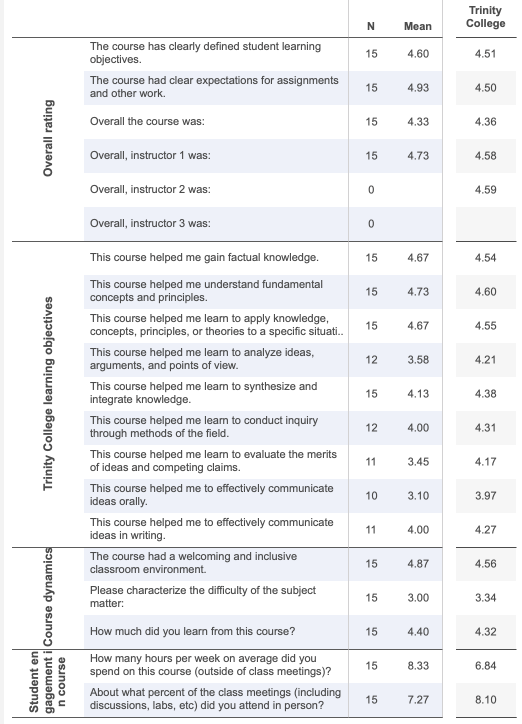

Contents
About Me
This portfolio serves to reflect on my professional growth throughout my academic career.
This portfolio functions to highlight my teaching philosophy, internship evaluations, teaching reflections, and course assignments.

I graduated from Duke University with a Masters degree in Computer Science. As a student, I conducted research in the areas of networking, autonomous vehicles, and Vehicle-to-Vehicle technology. I have also consistently served as a student tutor or teaching assistant in technical courses. This experience allowed me to quickly identify areas where students struggle most and effectively break down complex concepts and communicate them clearly. Post-graduation, I have ventured on to teach courses at Duke University at the undergraduate level. I have also had the chance to work closely with other professors and study their teaching philosophies and how they conduct their courses. This experience has lead to a vast growth in my own teaching philosophy and a more comprehensive view of academia.
Teaching Philosophy
Why teaching is important
Edsger W. Dijkstra, a world-renowned Computational Scientist once said,
Your obligation is that of active participation. You should not act as knowledge-absorbing sponges, but as whetstones on which we can all sharpen our wits.
Likewise, I strive to pass on technical knowledge by utilizing pedagogy, active learning techniques, and all other tools at my disposal. I continually strive to create an effective and effecient curriculum such that no curriculum, either big or small, is without room for improvment.
Fostering a community
The classroom should be a safe, caring community where everyone is free to speak, ask questions, and even make mistakes. Mistakes are not only welcomed, but they are a necessary part of the learning process. I seek to empower students to become active citizens in their learning community. This extends to students who do not wish to interrupt lecture with a question, I have found that providing an anonymous back-channel during lectures helps to answer their questions comfortably.
Before each new collaboration activity, a short ice breaker effectively allows students to become comfortable with one another and promotes effective peer-to-peer learning. Game-based learning (i.e. Jeopardy, Hangman, or Blocky) creates a fun and stress-free bonding activity while fostering course concepts.
Self-paced and asynchronous courses/workshops provide a unique challenge in that not all students are learning at the same pace and are separated by space and time. Offering online gatherings through video conferencing (i.e., Cisco Webex) can provide them with the needed flexibility in their schedules to work together if they elect to do so. Providing a course forum site (i.e., Piazza) where students are encouraged to answer their fellow peers' questions is another engagement opportunity. The course staff can always gently correct a student response or provide a different approach altogether. Following the Col model as a guide for online interactions among peers has been proven to be highly effective in facilitating online learning.
With courses of 50+ students, it becomes increasingly more challenging to create an intimate classroom environment where students feel seen by the course staff. This problem is especially true for struggling students. Early student outreach is an effective way for students to feel cared for and empowered by the course staff.
Active learning / Pedagogy
With an active learing community in place, it becomes much easier to engage students in a live lecture or workshop. It should be clear to students why attending a lecture or workshop is more beneficial than just watching a recording. These benefits include engagment through active learning techniques by interacting with one another through peer instructions (similarly, Think Pair Share) multiple times during every lecture. Continually polling the class to ensure the speed of lecture is adequate and proactively inviting questions. Occasionally I like to give students more control over what topics a lecture will cover or engage in a joint productive activity with them.
A varied variety of assessments are provided throughout the semester, each utilizing all aspects of Blooms Taxonomy. These assessments include graded and non-graded as well as individual and collaborative work. Giving students continual feedback throughout the semester empowers them to reflect on their progress and how effective their self-study habits are towards their learning. It also allows me to advise those falling behind early in the semester since I have the data to determine who they are. Likewise, students are also given the opportunity to assess my progress as an instructor for my own professional development.
No student is left behind! If a student has the will to learn, I will ensure the necessary resources are in place to empower them to do just that.
Diversity & Inclusion
I believe diversity should be present at all levels of a company or university. Claudia Brind-Woody, Vice President & Managing Director for Global Intellectual Property Licensing at IBM and a strong proponent for diversity, once said,
Inclusivity means not 'just we're allowed to be there,' but we are valued. I've always said: smart teams will do amazing things, but truly diverse teams will do impossible things.
Surrounding oneself with a diverse, talented group has been shown to enrich the educational experience. By empowering marginalized groups, we strengthen our communities and the workplace, ultimately contributing towards a healthier society.
In the curriculums that I create, the message of diversity and inclusion lies at the forefront. Not all students have had the opportunity to receive a rich grade school education or access the latest technologies. I keep this all in mind when designing any lesson plan.
Courses Taught
COMPSCI 94 - Programming and Problem Solving (Summer 2020)
Course Description
CompSci 94 is an introductory programming course that teaches fundamental computer science concepts. This version of CompSci 94 uses the tool Alice 3 to create 3-D virtual worlds. You will learn programming constructs such as repetition (calculating how many steps a person needs to walk to their car), selection (deciding which animal is the tallest), and organizing data (grouping penguins to waddle together), along with how to control objects (raise hands, flap wings, move, turn, spin, walk, etc.).
Course WebsiteSyllabus
Course Calendar (also includes classwork)
Assignments
Format
Online, asynchronous, relatively self-paced.
Deadlines are posted on a course calendar that I strongly urge students to follow, but they are given the option to turn in assignments past the deadline by filling out a form. The purpose of this is keep students accountable to a reasonable timeline and facilitate detection of any students who are falling behind. The term self-paced was not used purposfully so as to grant more importance to the reccomended deadlines. This course has a heavy workload, despite this, most students were able to consistently meet the reccomended deadlines. There were a few consistent students who were always behind, but I kept close communication with them to ensure they were making satisfactory progress.
Students were required to watch a pre-recorded video series that acted as a video textbook. I also provided them with live recorded lectures that recapped course concepts and provided plenty of time for students to collaborate. The live recording was optional to attend since this was officially an online asynchronous course. Still, the opportunity for collaboration and access to me provided enough incentive that attendance was plentiful and consistent.
I provided all the course material upfront at the beginning of the semester (except for exams). Students could technically do all the work in one week and be done with the class. However, that seemed unlikely to occur due to the learning curve and workload this course demands. I did find a few student were far ahead of others, but that was to be expected.
What went particularly well
As previously mentioned, creating a hands-on learning environment lead to empowering active citizens in the course. Most students would regularly attend lectures and participate throughout the lesson.
At the beginning of the semester, students were required to post an ice breaker, introducing themselves on Piazza. They were also required to comment on the post of 3 other classmates. I didn't have high expectations for these exercises' benefits, but it had surprising success. Students were going through everyone's posts and realized they had known friends in this online course; thus, they were much more open to collaborating when the time came.
Room for improvement
Despite my constant reminder for students to take advantage of our virtual office hours, very few students did. This course was designed to not be as challenging as the other course I taught, so this could be a significant factor. Piazza (our class forum website) was receiving a decent amount of traffic. It seems students were more comfortable receiving help via chat as opposed to a video conference.
If I teach this course again, I would like to provide students with an incentive (i.e., extra credit) to attend office hours as least once. I suspect that students found it easier to post a question on Piazza than to figure out how to navigate the office hours management tool we used for video conferencing. If I can incentivize students to jump over that initial hurdle, I believe they will see the value in having an office hours interaction over Piazza.
A positive note on using Piazza is that I can go back through all the questions asked and pinpoint areas where course content can be improved upon based on student comprehension.
COMPSCI 101 - Introduction to Computer Science (Summer 2019)
Course Description
Introduction to practices and principles of computer science and programming and their impact on and potential to change the world. Algorithmic, problem-solving, and programming techniques in domains such as art, data visualization, mathematics, natural and social sciences. Programming using high-level languages and design techniques emphasizing abstraction, encapsulation, and problem decomposition. Design, implementation, testing, and analysis of algorithms and programs. No previous programming experience required.
Course WebsiteSyllabus
Course Calendar
Assignments
APTS (short assignments)
Labs
Format
In person, synchronous, with a lab component.
Students were required to take short individual assessments before each lecture. These assessments allowed for multiple submissions to reduce the stress of having frequent graded evaluations. Non-graded collaborative reviews were also frequently given throughout each lesson (also known as Peer Instructions), the purpose of which was to engage students and promote peer-to-peer learning.
Unlike lectures which conceptually discuss course concepts, labs focus on applying the concepts. Labs allow students to work in pairs to solve classwork problems, which we later went over altogether.
There are two forms of projects given in this course. APTs are concise projects that allow students to practice a specific course concept. APTs have an Autograder component in which students can submit an unlimited amount of time. This instant feedback with no submission limitation results in students submitting much more frequently to the Autograder to check their progress, and the student grade average has gone up. Likewise, assignments are much longer and aim to allow students to practice combining course concepts to create a fully independent and operational Python program. Assignments are mostly Autograded with no submission limitation. I find students trully appreciate having that instant feedback.
What went particularly well
Throughout the lecture, peer instructions helped students realize whether they truly understood the concept we were discussing. There were many occasions where I would pause for questions, only to hear crickets. Then we would break out into pairs and work on a Peer Instruction. When we regrouped to go over it altogether, students could finally ask questions since they now knew what they did not fully understand.
By the time I taught this course, I had been developing the assignment Autograder for some time now with the initial help from Berkley University. The Autograder has undergone many changes as I would use the piazza posts from previous semesters to determine areas where it could improve. I realized during this course that the Autograder was pretty stable at this point.
Room for improvement
Since teaching this course, I attended a SIGCSE conference workshop that discussed a POGIL structure for group work. I am curious to try a POGIL system for this course. The challenges in doing so would be that lecture would have to be much shorter, maybe even a flipped classroom structure.
Courses Assisted as a Secondary Instructor
As a Teaching Associate, I play a vital role in managing the course staff and ensuring all students have the necessary resources to succeed. I will also occasionally cover a lecture in place of the primary instructor and help answer student questions offline. Below is a very kind email from one such time where I covered a lecture with as little as an hour's notice. The student's name has been censored to protect their privacy and maintian FERPA compliance.
COMPSCI 101 - Introduction to Computer Science
Course Description
Introduction to practices and principles of computer science and programming and their impact on and potential to change the world. Algorithmic, problem-solving, and programming techniques in domains such as art, data visualization, mathematics, natural and social sciences. Programming using high-level languages and design techniques emphasizing abstraction, encapsulation, and problem decomposition. Design, implementation, testing, and analysis of algorithms and programs. No previous programming experience required.
Course Website (FA18)Course Website (SP19)
Course Website (FA19)
Course Website (SP20)
Course Website (FA20)
Course Website (SP21)
Semesters Involved
- Fall 2018
- Spring 2019
- Fall 2019
- Spring 2020
- Fall 2020
- Spring 2021
COMPSCI 310 - Introduction To Opertaing Systems
Course Description
- Fall 2018
- Spring 2019
- Fall 2019
- Spring 2020
- Fall 2020
- Spring 2021
COMPSCI 310 - Introduction To Opertaing Systems
Course Description
This course gives an introduction to systems concepts and operating systems. Traditionally the course emphasizes classical operating systems topics: concurrency, facilities for storage, communication, and protection, kernel services and structure, architecture/OS interaction, distributed systems, and practical application of operating system concepts in real operating systems. We also explore the nature of "systems" as an evolving discipline encompassing all aspects of bridging the gap between applications and hardware.
More broadly, an operating system is software that controls some programmable platform for sharing resources and data. All operating systems must deal with core issues of protection, resource management, program environment and execution, coordination, and reliable state storage and recovery. Various programming systems ranging from cloud services to Web frameworks to programmable networks to browsers meet our definition of a "programmable platform". The last part of the course covers principles and topics that are important for understanding modern networked software systems.
The prerequisites for this course are introductory programming and basic computer architecture (e.g., CPS 250). The intended audience is computer science undergraduates and graduate students needing a background in systems.
Course Website (FA19)Semesters Involved
- Fall 2019
COMPSCI/ECE 250 - Introduction to Computer Architecture
Course Description
- Fall 2019
COMPSCI/ECE 250 - Introduction to Computer Architecture
Course Description
This course provides you with a basic understanding of how computers work. Starting from basic number and data representation we explore how computers store and manipulate information to perform computation. This is followed by higher-level systems designs including memory and input/output. We conclude with a brief discussion of advanced topics in computer systems design.
Topics covered include: C Programming, computer systems organization, machine language and assembly programming, machine representation of data and instructions, computer arithmetic, basic logic design, the CPU and instruction interpretation, memory organization, peripherals and I/O.
Prerequisites: Compsci 201 or equivalent, ability to program in a high level language.
Course Website (SP20)Course Website (FA20 - has since been taken down)
Course Website (SP21)
Semesters Involved
- Spring 2020
- Fall 2020
- Spring 2021
COMPSCI 316 - Introduction to Databases
Course Description
- Spring 2020
- Fall 2020
- Spring 2021
COMPSCI 316 - Introduction to Databases
Course Description
We intend this course to give you a solid background in database systems as well as managing and processing "big data" in general. Topics include data modeling, database design theory, data definition and manipulation languages (SQL and NoSQL), database application programming interfaces, storage and indexing, query processing and optimization, parallel and distributed data processing, transaction processing, as well as a sample of other advanced topics. A prerequisite of CompSci 201 or equivalent, or consent of the instructor is required.
Course Website (FA20)Semesters Involved
- Fall 2020
Effectiveness of Teaching
Course Evaulations
Average evaluation results with comparisons:
- Fall 2020
Effectiveness of Teaching
Course Evaulations
Average evaluation results with comparisons:
At the end of every course, students are given the opportunity by the University to rate me and the course overall. Below are the results of those surveys for the courses I have taught as a primary instructor. The rightmost column compares my results with Duke's Trinity College of Arts & Sciences.
List of student comments from those same surveys:
What would you like to say about this course to a student who is considering taking it in the future?
- Definitely take this class- especially if you are nervous about the world of compsci/coding. It is a great introduction and the instructor is incredibly helpful and understands that we are all beginners.
- I liked the 4-week setting a lot because you were able to retain all the knowledge. However, it was a lot of work because you had class and assignments every day.
- "I was inches away from ranking the class ""excellent"" only a few barriers fall in place: 1. I think with time professor Velasco will grow to be a more clear instructor. However, oftentimes in lecture the concepts grew over-complicated. THAT BEING SAID, she has the unteachable/untrainable skill of being inclusive and welcoming, understanding and caring. I truly want to pursue compsci even more now, and without her support i dont think i would be able to.
- It can be very time-consuming and sometimes frustrating. But in the end, it's really rewarding when you're able to create something cool!
Would you like to provide any other comments about this course?
- Professor Velasco is AMAZING! She's so nice and she explains everyhting really well.
- Professor Velasco is great and so willing to work with students.
Student Performance
On average, 75% of the class receives a grade in the A range, 14.3% of the class falls in the B range, 10.7% in the C range and below.
With regards to student retention, 90.3% of students remain in the course until completion. Summer courses have a higher withdrawal rate due to the compressed nature of the course. I also aim to have at least one exam graded and returned to the students before this deadline to empower them to make an informed decision on whether continuing in this course is right for them.
Examples of Student Work
Examples of student work is available upon request.